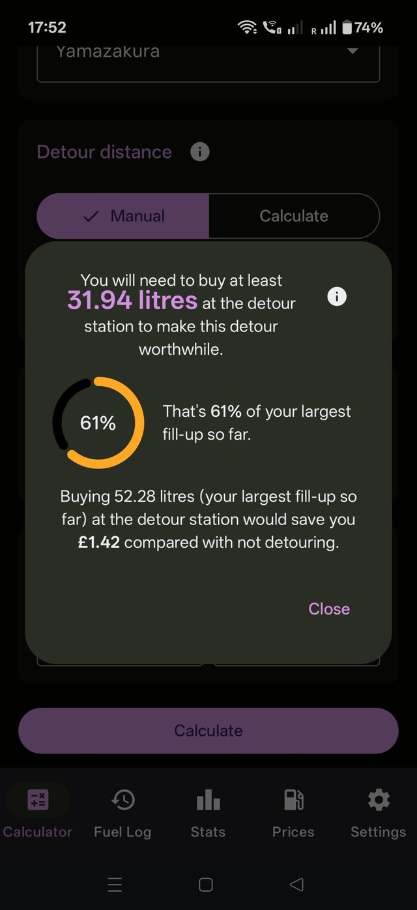

Everything the app can do, tab by tab.
The Calculator and Prices tabs work straight away — no setup needed.
To use the Calculator straight away: open the Calculator tab, enter how much extra distance the detour adds, both prices, and your vehicle's efficiency.
To use Prices, just search — no vehicle details are needed.
If you like, you can add vehicles and log your fuel fill-ups against them. The app can then work out your real fuel economy and compare the litres you'd need to buy at a cheaper fuel station with your largest logged fill-up, to see if the detour will save you money. This makes the detour calculator much more useful. To do this:
Look out for the (i) icons throughout the app — tap one for a plain-English explanation of whatever it sits next to.
Works out the minimum amount of fuel you'd need to buy at a cheaper detour to make the trip worth it.
The calculator is split into four sections — Vehicle, Detour distance, Efficiency and Prices — each with an (i) icon explaining it.
Pick a vehicle to use its fuel log for your average efficiency and largest fill-up so far, which the app treats as your tank size. You can also leave it clear and simply type your own efficiency figure — the calculator works either way.
Two modes: Manual, where you type the extra distance the detour adds directly, or Calculate, where you enter the length of your normal route and the length of the detour route — the app works out the difference for you.
The efficiency unit — MPG (UK), MPG (US), or L/100km — is chosen on the Settings tab. Type a figure by hand, or tick Use average once you've logged two or more fill-ups, to use your vehicle's real calculated efficiency instead of a guess.
Enter the current fuel price (your usual stop or normal route) and the detour fuel price in £ per litre. The Calculate button stays pinned at the bottom of the screen — tap it (or press Done on the keyboard) and the answer appears in a popup. Tap Close, tap outside it, or press Back to dismiss it.

The minimum litres you'd need to buy at the detour station for its cheaper price to outweigh the extra fuel used getting there. The detour price has to be lower than your current price for the detour to ever pay off.
With a vehicle that has at least one fill-up logged, the litres you'll need to buy is shown as a percentage of your largest fill-up so far — our best guess at your tank size. The gauge turns red above 100%, meaning it may not fit in your tank. Below 100% you'll need to compare it to your fuel gauge to see if you think the detour is worthwhile.
Compares buying a 'largest-fill-up so far' amount of fuel at the detour station against paying your current price (including the cost of the extra fuel used) and tells you how much you'd save, or how much more it would cost.
We don't know how much fuel is already in your tank, so always compare the result with your actual fuel gauge. We also advise you check with the fuel station you decide to use before visiting to make sure it will be open when you go.
Every fill-up you log here is what makes the Calculator and Stats accurate — note the two checkboxes are important!
If you open the Fuel Log or Stats tab without a vehicle selected, the message on screen has a tappable link that takes you to the Settings tab where you can add one.
Tap the + button and fill in the date (it can't be in the future), odometer reading, litres, and cost per litre or total cost. Fill in any two of litres, cost per litre and total and the app works out the third. If you then edit the calculated one, it recalculates one of the others instead, so the three always add up. Tap Cancel to back out without saving.
Missed previous refill(s) — tick this if you forgot to log your previous fill-up. It stops that unlogged gap being counted in any efficiency figure, since the litres you did log wouldn't match the true distance covered.
Not filled to brim (partial fill) — tick this if you stopped short of a full tank. A partial fill quietly skews two different figures in opposite directions, so this one entry is excluded from Max MPG / Min L per 100km, and the fill-up after it is excluded from Min MPG / Max L per 100km.
Every entry has a pencil icon — edit any field, including both checkboxes, at any time. Stats recalculate immediately, so if you logged a partial fill weeks ago without ticking the box, go back and tick it now.
The bin icon deletes an entry after a confirmation. Straight afterwards an Undo bar appears at the bottom of the screen — tap it to bring the entry back, and the list scrolls to show it.
Above the log are two labelled buttons, Import and Export, with an (i) icon explaining them. Both work with CSV files (a spreadsheet format you can also open in Excel or Google Sheets).
FDC <vehicle name>.csv or FDC all vehicles.csv, and a message confirms what was saved.If a file can't be read, the app says so rather than failing silently — make sure it's one exported from Fuel Detour Calculator.
A running summary for whichever vehicle is selected, once you've logged at least two fill-ups. Use the vehicle dropdown at the top to switch between vehicles.
Average, best, and worst MPG or L/100km, in the unit chosen on the Settings tab.
Total distance driven, your safe range estimate, and total & average spend.
Total, average, and largest fill-up — the largest one (partial fills included) doubles as a rough tank-size estimate elsewhere in the app.
A line chart with one point per fill-to-fill trip, oldest on the left, so you can see whether your economy is improving or slipping. Trips involving a partial fill or a missed fill-up are left out. Needs at least two usable trips.
Bars showing what you spent on fuel in each of your last six months with a logged fill-up.
Every row has an (i) icon that explains exactly how that figure is worked out.
It's the average of your three longest fill-to-fill distances on record — roughly what you've proven this vehicle can manage on a tank, based on your best runs.
Because it's built from your longest tanks, this number leans toward your best-case driving, not a conservative floor. Motorway cruising, stop-start town driving, a full boot, a cold engine, or bad weather can all shift your real range in either direction on any given trip.
Treat it as a rough guide, not a substitute for judgement — don't run down toward empty just because the number says you should still have miles left, especially before a detour or a trip somewhere remote.
Finds fuel stations and sorts them by the price of whichever fuel type you've selected.
To search for fuel prices around you, leave the postcode box blank or tap the location pin (you'll be asked to allow location access the first time). To search in another area, enter a postcode. Set a search radius (in miles or kilometres, set on the Settings tab) and pick a fuel grade: Unleaded, Super Unleaded, Diesel, or Premium Diesel. Choose whether to sort by Price or Distance.
Prices come from the UK Government's Fuel Finder service, via our own server, which keeps the national price data ready for you. If nobody has searched recently, the first search can take up to 30 seconds — the app tells you while it waits. After that, searches are usually near-instant. Note: overnight the data isn't refreshed automatically, so you may need to refresh it a couple of times for it to work — this is the price of a free app!
Unleaded and Super Unleaded run at genuinely different prices, as do standard and Premium Diesel. Picking one specific grade means the price you see and the order stations are sorted in are always the same thing — no mixing a station's cheap regular fuel with another's pricier premium.
Each station shows its price on the left and its distance on the right (in miles or kilometres, following your Settings choice). Next to the price you'll see either a Cheapest badge — for the lowest-priced station or stations in the list — or how much dearer the station is, such as +2.1p.
Below that come the station's name — with its brand in brackets if that's different — and its area, town and full postcode, followed by how recently that price was updated ("Price updated 2 days ago") and today's usual opening hours, where the station publishes them ("Today: 06:00–22:00", or "Open 24 hours"). Sort by Price or Distance using the buttons under the fuel grades. The top bar shows when the prices were last downloaded.
Every station has two icons: a map pin to show it on the map, and a directions icon to navigate to it. Navigate hands the station's location to the navigation app of your choice — Google Maps, Waze, or whichever you have installed. Tapping anywhere else on a station's card also shows it on the map.
Use the map/list icon at the top right to switch views. What you see depends on how you got there:
Tap any price flag on the map to select it and see a panel with its name, price, how recently that price was updated, today's opening hours and a Navigate button. Tap an empty part of the map to clear the selection.
Our server refreshes prices at most every 15 minutes and station details at most every hour, so if you tap refresh when nothing has changed, the app tells you the prices are already up to date. The app also keeps your last search for 15 minutes, so coming back to the Prices tab within that time shows it again without searching afresh. Stations with prices older than two weeks, and stations marked as closed, are left out.
Your unit and appearance preferences, plus vehicle management.
Choose MPG (UK), MPG (US), or L/100km. This applies across the Calculator, Fuel Log, Stats and Prices tabs. Distances follow it: miles for the MPG options, kilometres for L/100km.
Choose Light, Dark, or System to follow your phone's own setting. The app starts in Dark.
Add Vehicle creates a new vehicle — names must be unique, and you can also create one while importing a log. Below it is a list of all your vehicles; tap one to select it (shown with a tick). The Delete button at the bottom removes the selected vehicle and all of its fuel log entries, so export the log first if you want to keep it.
Everything vehicle-related — the calculator's average, your stats, your log — is scoped to whichever vehicle is currently selected. Choose one from the dropdown at the top of the Calculator, Fuel Log or Stats tab (they all share the same selection), or tap it in the vehicle list here. The Calculator and Stats dropdowns also have a Clear selection option.
The first time you open the app, a short welcome tour covers the basics. Replay it any time with the Show welcome tour button on this tab.
The top of the page shows the app's version and a link to this website.